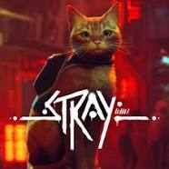

Elden Ring on kolmanda isiku tegevus-/rollimäng, millel on lai valik relvi, esemeid ja viise vaenlastega võitlemiseks – isegi rohkem kui Soulsi seerias. Kuigi see pole seeriaga otseselt seotud, põhineb mäng mänguliselt suuresti Dark Soulsil..

Dying Light 2 Stay Human on avatud maailma esimese isiku ellujäämisõudus- ja Action/RPG-videomäng, mille on välja töötanud ja avaldanud Poola ettevõte Techland PlayStation 4, PlayStation 5, Xbox One, Xbox Series X/S, Nintendo Switchi ja Windowsi jaoks. konsoolid.. Järg filmile Dying Light 2015.

God of War: Ragnarök on häkkimise ja kaldjoonega põnevus-seiklusvideomäng, mille on välja töötanud Santa Monica Studio ja välja andnud Sony Interactive Entertainment. See on God of Wari seeria üheksas mäng ja 2018. aastal ilmunud God of Wari otsese looga järg.

Stray on seiklusvideomäng, mille on välja töötanud BlueTwelve Studio ja avaldanud Annapurna Interactive. Mäng ilmus 19. juulil 2022 Windowsile, PlayStation 4-le ja PlayStation 5-le. Varem oli mäng tuntud nimede HK_Project ja HK-Devblog all, mis pärinevad selle arendajate kauaaegsest blogist.